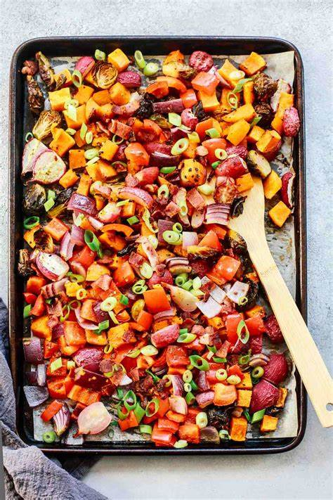

Roasted Vegetables
These vegetables are roasted to perfection and seasoned with olive oil, salt, and pepper. They're a healthy and delicious side dish.
Ingredients
- 1 large onion, chopped
- 2 carrots, chopped
- 2 cauliflower, cutted
- 2 celery stalks, chopped
- 1 red bell pepper, chopped
- 1 green bell pepper, chopped
- 1 tablespoon olive oil
- 1/2 teaspoon salt
- 1/4 teaspoon black pepper
Instructions
- Preheat oven to 400 degrees Fahrenheit.
- In a large bowl, combine the onion, carrots, celery, bell peppers, olive oil, salt, and pepper.
- Spread the vegetables in a single layer on a baking sheet.
- Roast for 20 minutes, or until the vegetables are tender and slightly browned.
- Serve immediately.
Enjoy!